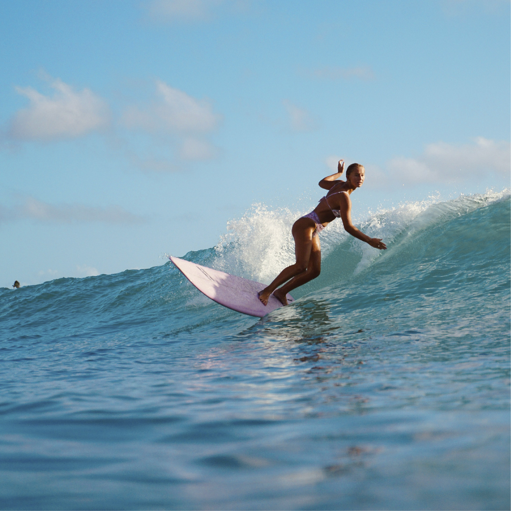

Surfing is a surface water sport in which an individual, a surfer (or two in tandem surfing), uses a board to ride on the forward section, or face, of a moving wave of water, which usually carries the surfer towards the shore. Waves suitable for surfing are primarily found on ocean shores, but can also be found as standing waves in the open ocean, in lakes, in rivers in the form of a tidal bore, or wave pools.
Surfing’s roots lie in premodern Hawaii and Polynesia, where the sport was practiced by both men and women from all social strata from royalty to commoners. Early European explorers and travelers praised the skills of Hawaiian surfers, but 19th-century missionaries assigned to the islands disapproved of the “constant intermingling, without any restraint, of persons of both sexes” and banned the pastime. Surfing was practiced only sporadically in Hawaii by the end of the 19th century.
Three major subdivisions within stand-up surfing are stand-up paddling, long boarding and short boarding with several major differences including the board design and length, the riding style and the kind of wave that is ridden. While Hawaii remains the spiritual home of surfing, surfers appear wherever waves break, from Norway to the Antarctic, from the Mediterranean Sea to Lake Michigan.